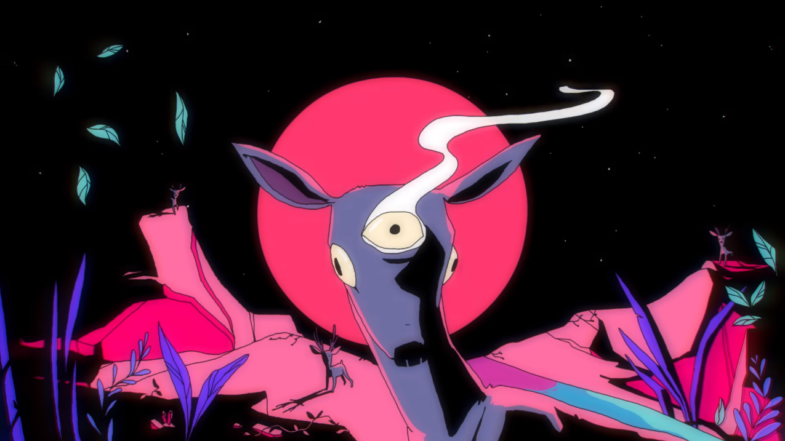

История

| Участники | |
|---|---|
| Текущий состав | |
| Имя | Музыкальный инструмент |
| Джордан Дрейер (Jordan Dreyer) | вокал, ударные |
| Чэд Стеринбург (Chad Sterenberg) | гитара |
| Кевин Уайттемор (Kevin Whittemore) | гитара |
| Адам Весс (Adam Vass) | бас-гитара |
| Бред Вандер Ладжт (Brad Vander Lugt) | ударные, клавишные |
Студийные альбомы
- 2008 — Somewhere at the Bottom of the River Between Vega and Altair
- 2011 — Wildlife
- 2014 — Rooms of the House
- 2016 — Tiny Dots
- 2019 — Panorama
Мини-альбомы
- 2006 — Vancouver
- 2008 — Untitled 7"
- 2008 — Here, Hear.
- 2008 — Here, Hear II.
- 2008 — Winter Tour Holiday CD-R
- 2009 — Here, Hear III.
- 2010 — Searching for a Pulse/The Worth of the World
- 2011 — Never Come Undone
- 2012 — Conversations